图的本体是 architecture-2026-10-02-as-built.svg（唯一可编辑源）；同目录
.png 是其渲染件（3200×2000），物理图见 physical-architecture-2026-10-02.svg（3200×2100）。本页只承载校验记录。
取代关系：本版取代 architecture-2026-10-01-as-built.* 与
physical-architecture-2026-10-01.* —— 那一对画的是 V0.20 及以前的「两条路」时代
（海外边缘退化路、:9988/:8899、三台主机），旧文件留作快照，不再维护。

| 旧图陈述 | 判定 | 订正 / 依据 |
|---|---|---|
| 顶部决策条「境内备案前主入口 9988/8899 TLS，只放行 80/443 的网络走海外 443 边缘退化路」 | 过时 | V0.21 起门户/入口/站点合并在一台机器的 443；:9988/:8899 取消；边缘退化路整体删除；唯一独立端口是隧道控制 8989。SDD/08 卷首 V0.21 决定、SDD/14 V0.21 |
| 中泳道「单地域（乌兰察布 ECS）」「公网开放 8899 / 9988 / 8989 · 境内备案前 443 不可用（R-H13）」 | 错 | 现在是一台机器 hub.vlsc.net = www.vlsc.net = portal.mrrc.vlsc.net（203.25.119.168，香港 VPS）；公网只需放行 443 与 8989；R-H13 随入口回到 443 消退（SDD/13）。规格/安全组明细未取证，图上不写 |
「退化路 · 海外边缘 443」整盒（www.vlsc.net/mrrc_modern/<呼号大写>/ 路径反代） | 作废 | 路径随 V0.21 删除。本版改为入口层注记条说明删除与理由（两条路指向同一个 nginx，留第二套只是多一处会坏的配置）；物理图另设「V0.21 删掉的（存史）」盒留档 |
「Portal 入口 portal.mrrc.vlsc.net:8899」 | 端口错 | 门户挂在根（旧 /mrrc_portal/ 301）；服务本体仍只绑 127.0.0.1:8890，nginx 那层限流 /apply。SDD/12 §12.8、deploy/deploy_hub_routes.sh |
「主路 · 呼号通配 vhost :9988 与 :8899」；右泳道「主路／退化路」 | 错 | 入口 https://<呼号>.mrrc.vlsc.net/（443，不带端口）；「主路」二字删除 —— 已无第二条路。另：:8899 从未对公网开放（实测三次被拒），「主路」的说法本就不符事实，见 SDD/08 卷首 |
数据路径「浏览器 → nginx :9988/:8899 → …」 | 端口错 | 改为 :443 |
| Owner 盒「授予后路由重生成仍 root 手执行」 | 错 | 自 V0.17 起 mrrc-hub-routes.timer（30 s，root，oneshot）哈希比对、真变了才 nginx -t + reload（deploy/systemd/*）。仍手工的只有 /admin 的核验与授予；Portal 无 reload 权限是有意分工 |
| 用户访问链路五步（无令牌、无登记、入口带端口） | 缺环节 | 改为六步：/apply 应答交付 request_token（V0.18）→ /status 轮询或 /claim 领取 → 运维核验+分配（唯一手工）→ 应用自动签自签证书 + /enroll + 装常驻隧道（v1.24.0 起租户不敲命令）→ 443 入口 → 口令登录 |
| 页脚「剩余：ICP 备案（回 443）、一机一证、Operator 租约、成员管理」；「实测公网往返 118–168 ms」 | 过时 | 入口已在 443，备案不再是前置（R-H13 消退，存史）；剩余项改列一机一证迁移（bg1sb 仍指旧证书名）、Operator 租约、成员管理。118–168 ms 是旧 hub 时期读数，迁港后未复测，显式标注 |
（缺失）站点/下载、30 s 路由 timer、hub→实例证书链、Portal 的 /status//claim//enroll | 补入 | 入口层加第三盒「站点与下载 · 同机」；注册表盒补 timer 语义；证书横切补「实例自签 → /enroll → 信任包钉住 → proxy_ssl_name $mrrc_tls_name」；Portal 盒补令牌交付与三个端点（portal/app.py 实为 9 POST + 2 GET） |
| 左列 PTT/角色 gate/出站隧道语义、控制面六盒与目标态存储、PTT 不变量、容量基线、日志不记 query（AD-H07） | 保留 | 与现网仍一致，未改动语义；左列补 Windows 计划任务与裸呼号标签规则（V0.21） |
| 旧图陈述 | 判定 | 订正 / 依据 |
|---|---|---|
| 标题「三台主机 + 外部依赖」；主机③「海外边缘 · www.vlsc.net（193.111.30.163）」整块 | 结构变 | 改两台主机：实例 + 一台机器（hub ＝ www ＝ 门户）。主机③ 的静态站与留言版并入主机②（同机 vhost）；边缘反代盒删除 |
主机②副标「阿里云 ECS 乌兰察布 · iZ…a6Z · 公 8.160.161.80 / 内 172.19.95.147 · 2vCPU/3.6G/40G · 安全组仅 22/8899/9988/8989」 | 全错 | 那是老机器。新版写 hub.vlsc.net · 203.25.119.168 · Ubuntu 26.04，公网只需放行 443 与 8989；规格/SSH 账号/安全组明细/IPv6 可达性未取证，图上不编 |
nginx 盒「:9988 / :8899 TLS」「:8899 上 portal.mrrc.vlsc.net → 8890」 | 端口错 | 443 上三套 vhost（实例入口通配 / 门户挂根 / vlsc.net 静态）；门户旧路径 301；限流 zone=mrrc_portal_apply burst=5 nodelay |
| 回环拓扑「公网上只暴露 nginx(8899/9988) 与 frps(8989)」 | 端口错 | nginx(443) 与 frps(8989)；188xx 与 8890 永不外听 |
运维入口「ssh cheenle@8.160.161.80」「路由变更 = gen_hub_routes.py && nginx -t && reload（root 手执行）」 | 错 | 新机 SSH 账号与 sudo 形态未取证，不写 IP；路由变更自 V0.17 起由 30 s timer 自动。管理台文案仍打印手工 root 命令属已知滞后，图上注明「另案」 |
定时盒「两个 cron」；V0.20 的跨机 mrrc-portal-sync.timer（08:30） | 不全/失效 | 补 mrrc-hub-routes.timer（30 s）；跨机同步 timer 随合并失去对象，标存史；04:30 呼号库同步保留（合并后为机内两跳，规模门 <10 万条拒换） |
外部依赖「主路 :9988（或 :8899）· 退化路 www 443 路径 · 只放行 80/443 出站才需要退化路」 | 错 | 443 唯一入口 + 局域网 :8888；退化路说明删除 —— 入口自身就在 443，R-H12 的缓解已达成 |
| 阿里云 DNS「通配 A → 8.160.161.80」；Let's Encrypt「仅 DNS-01（境内 80/443 不可用，R-H13）」 | 理由过期 | 通配 A 当前指向未取证（2026-09-30 实测为旧 hub）；DNS-01 的理由改写成 LE 通配证书规则，与备案无关 |
| 连线「9988 / 8899 · TLS 通配真证书（主路）」「443 边缘路径（退化·间歇）」「反代 →9988」 | 作废 | 三条删除；改为一条 443 唯一入口线。间歇 3/6 的真因（边缘 nginx 选中旧 hub 不可达的 IPv6）写入「存史」盒，见 V0.19 |
| 实例侧「C1 未落地 / C2 未落地」「v1.22.0 已订正为未发布」「CN/SAN=<label>…」 | 口径过期 | C1/C2 在 SDD/11 §11.3 与 SDD/README（v1.22.0 打包版已含）之间互相冲突，现场已到 v1.24.x —— 标未取证不站队；shell 版自签证书只有 CN、Windows 版才有 SAN；落盘补 Windows 路径；「三件事」改「四件事」（补 30 s timer，且 v1.24.0 起第 2/3 步由应用自动做） |
| 页脚信任锚「www→hub 靠系统 CA」；读数基线「2026-10-01 三处现场」 | 作废/过期 | www→hub 那一跳已无对象；基线改为「2026-10-02 按 V0.21 记录重绘，主机② 的逐项读数仍是旧机所取、搬迁后未逐项复测」 |
| （缺失）合并的代价 | 补入 | 新增「合并的代价：单点变大了」盒 —— 一台机器同时是入口+门户+站点+隧道端点；真单点是这台 VPS 与通配证书续期链（两者都有告警退出码）；同时注明三条跨机坏链路随合并消失 |
| 主机① 电台/服务/frpc 语义、落盘权限位、重启行为、信任包钉住自签公钥 | 保留 | 与现网仍一致；frpc 盒补 Windows 计划任务与版本钉 0.71.0 |
| 项 | 说明 |
|---|---|
| 新主机规格 / SSH 账号 / 安全组明细 | 203.25.119.168 上的 CPU/内存/nginx 版本/登录账号/安全组内容无任何记录；旧图里的 2vCPU/3.6G/40G 与实例 ID 属老机器，不可照搬 |
| 新主机 IPv6 可达性 | 旧 hub 的 v6 入站/出站是坏的（V0.19 定根因）；搬迁后没人复测，而 deploy_hub_routes.sh 现在生成 listen [::]:443 —— 图只写「未取证」，不把 v6 画成通的 |
*.mrrc.vlsc.net 通配 A 的当前指向 | 2026-09-30 实测为 8.160.161.80（旧 hub）；V0.21 之后无记录 |
| 注册表当前行数与标签 | SDD/12 §12.8 的机上读数「仅一行 bg1sb 18802 radio.vlsc.net」与 SDD/14 V0.21「已有两条记录已迁移」冲突，两条记录的标签从未写进任何文件 —— 图上不写具体行 |
| 47.80.243.9 那台 V0.20 门户主机的后续处置 | 只记录「不再承载门户」，不断言已下线 |